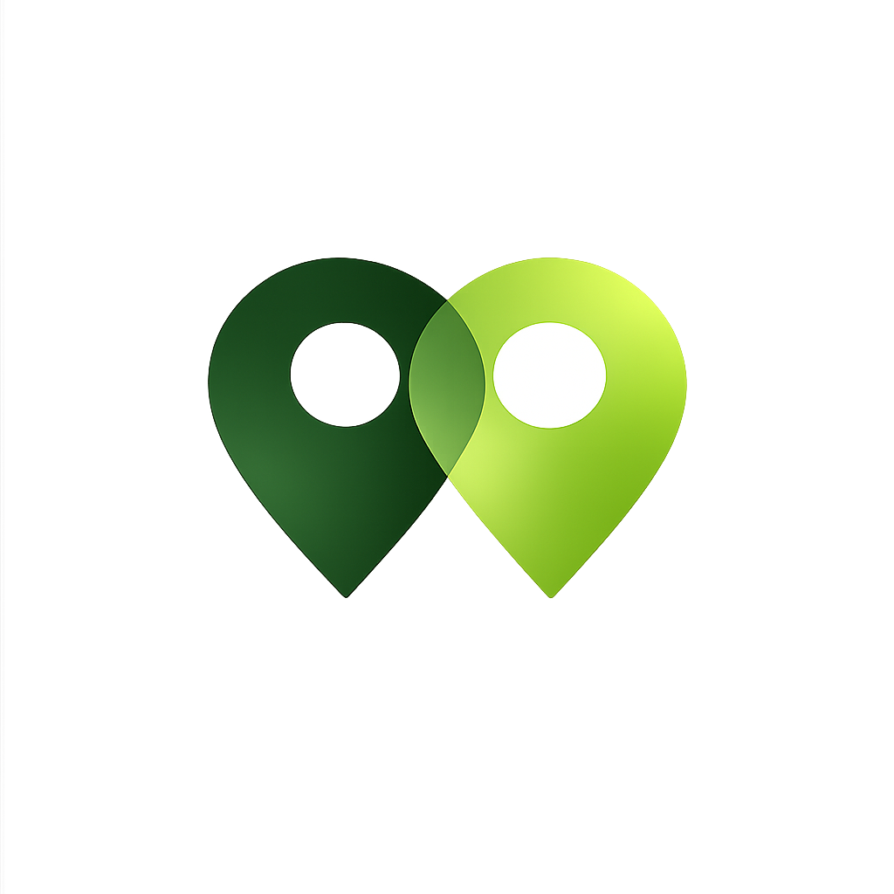

Logo Variations
1. Logo Mark (Icon Only)
The standalone logo mark featuring two overlapping location pins. Use this variation for small spaces, favicons, app icons, or when the logo needs to be recognized at very small sizes.

Description: Two location pins (map markers) in dark forest green and bright chartreuse green overlapping to create a unified mark. The overlap represents connection and community.
Colors: Dark Green (#1B5C3A) + Bright Green (#B4E035)
Best for: Favicon, app icon, social media profile pictures, small badges, merchandise, stickers
2. Full Logo Lockup (Mark + Text)
The complete logo including the mark, wordmark, decorative swoosh, and tagline. This is the primary logo for most applications.
Description: Complete visual identity including the logo mark on the left, "COMMUNITY" in bright green, "CARPOOL" in dark green, a curved swoosh element, and the tagline "Share rides. Cut emissions."
Layout: Horizontal lockup with mark (left) and text stacked (right)
Best for: Website header, business cards, email signatures, presentations, printed materials, primary branding
Technical Specifications
Dimensions & Proportions
| Logo Variation | Aspect Ratio | Recommended Width | Minimum Width | Notes |
|---|---|---|---|---|
| Logo Mark Only | 1:1.3 | 120px - 500px | 32px | Works at any size from favicon (32px) to billboard |
| Full Logo Lockup | 3:1 | 400px - 1200px | 240px | Minimum 240px for readable text |
Clear Space Rules
Minimum Clear Space (Padding Around Logo)
Logo Mark: Minimum clear space = 20% of the logo width on all sides
Full Lockup: Minimum clear space = 40px or 5% of the logo width (whichever is larger)
Clear space is the minimum distance between the logo and any other graphic elements, text, or edges. Never allow other elements to crowd or overlap the logo.
File Formats & Recommendations
| Format | Use Case | Best For | Notes |
|---|---|---|---|
| WEBP | Web, social media | Digital/screen use | Smallest file size, excellent quality. Use this for websites. |
| PNG | Web, presentations, digital | Any digital use | Transparent background, widely supported. Standard choice. |
| SVG | Responsive web design | Modern websites | Infinitely scalable vector. Best for web applications. |
| Print collateral | Print design | High quality vector format for printing. |
Color Specifications
Primary Brand Colors
| Color Name | Visual | Hex | RGB | Usage |
|---|---|---|---|---|
| Dark Forest Green | #1B5C3A | rgb(27, 92, 58) | Left pin, "CARPOOL" text, swoosh | |
| Bright Chartreuse | #B4E035 | rgb(180, 224, 53) | Right pin, "COMMUNITY" text | |
| White | #FFFFFF | rgb(255, 255, 255) | Circles within pins, contrast |
Color Application Rules
Preferred Version
Full Color: Use with both dark green and bright green. This is always preferred.
Single Color (Dark Green Only)
When full color is not possible (e.g., one-color printing, embroidery), use #1B5C3A for all elements.
Reverse (White on Dark)
On dark backgrounds (dark green, dark navy, black), use white (#FFFFFF) for all elements.
Usage Guidelines
Logo Do's & Don'ts
✅ DO
Maintain proportions. Always scale the logo proportionally. Never stretch or squash it.
❌ DON'T
Distort it. Never alter the aspect ratio or modify logo elements.
✅ DO
Provide clear space. Always maintain minimum clear space around the logo.
❌ DON'T
Crowd the logo. Never place elements too close or overlapping.
✅ DO
Use full color when possible. It's the most recognizable and impactful.
❌ DON'T
Change colors. Never alter or use unapproved colors in the logo.
✅ DO
Choose appropriate backgrounds. Light backgrounds for full color, dark backgrounds for white version.
❌ DON'T
Place on busy backgrounds. Logo must have sufficient contrast and clear visibility.
Recommended Sizes for Specific Applications
| Application | Logo Variation | Recommended Size | Notes |
|---|---|---|---|
| Favicon | Logo Mark | 32px × 32px | Use PNG at 2x resolution (64px) |
| App Icon | Logo Mark | 180px × 180px | Use 1024×1024px as source |
| Website Header | Logo Mark or Full Lockup | 40px - 80px height | Logo mark preferred if space is limited |
| Social Media Profile | Logo Mark | 400px × 400px | Use PNG or WEBP with transparent background |
| Business Card | Logo Mark or Full Lockup | 0.5" - 1" width | Print at 300 DPI |
| Email Signature | Logo Mark | 50px × 50px | Use PNG with transparent background |
Accessibility & Contrast
Color Contrast
Dark Green on Light Background: Contrast ratio 8.4:1 ✅ Excellent (exceeds WCAG AAA)
Bright Green on Light Background: Contrast ratio 5.2:1 ✅ Good (exceeds WCAG AA)
All color combinations meet accessibility standards for web and digital content.
Alt Text for Accessibility
Logo mark: "Community Carpool logo - two overlapping location pins"
Full lockup: "Community Carpool - Share rides. Cut emissions."
Always include descriptive alt text for logo images on web pages to support screen readers.